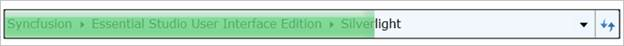

The progress bar for the HierarchyNavigator control can be displayed or removed.

Figure 579: Progress bar
There are two methods to display the progress bar:
1. Calling the ShowProgressBar method in HierarchyNavigator, which displays the progress bar for a time span of 500 ms.
|
C#
HierarchyNavigator hierarchyNavigator = new HierarchyNavigator(); hierarchyNavigator.ShowProgressBar(); |
2. Passing an argument in the method to show a specified time span. The image below shows a time span of 1000 ms that has been passed.
|
C#
HierarchyNavigator hierarchyNavigator = new HierarchyNavigator(); hierarchyNavigator.ShowProgressBar(new TimeSpan(0, 0, 0, 0, 1000)); |
The progress bar can be canceled by using two methods:
1. Calling the CancelProgressBar method in HierarchyNavigator.
|
C#
HierarchyNavigator hierarchyNavigator = new HierarchyNavigator(); hierarchyNavigator.CancelProgressBar(); |
2. Passing an argument in the method to cancel the progress bar within a particular span of time. This method helps users cancel the progress bar when preferred. The image displayed below shows a time span of 1000 ms that has been passed.
|
C#
HierarchyNavigator hierarchyNavigator = new HierarchyNavigator(); hierarchyNavigator.CancelProgressBar(new TimeSpan(0, 0, 0, 0, 1000));
|